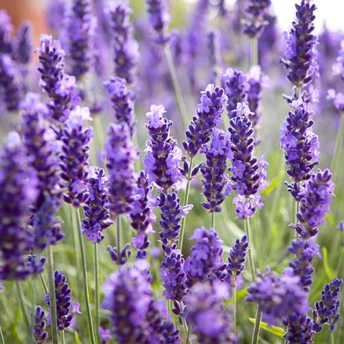
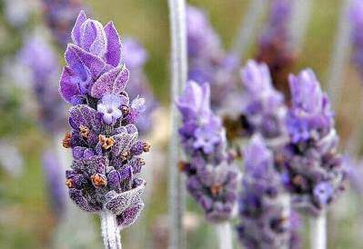

Лаванда є вічнозеленим багаторічним чагарником, її називають "бузкове диво".
Як лікарська рослина, лаванда, особливо олія лаванди, відома своїм заспокійливим ефектом.
Лаванда в стародавньому Єгипті була визнана великою «заспокійливою» силою для душі,
а також застосовувалася як парфум, засіб для догляду за шкірою, використовувалися також для бальзамування релігійних церемоній.
Рослина в сушеному вигляді - невід'ємна частина французької кухні.
Ароматична олія міститься у всіх частинах рослини лаванди.
Але цілюще дорогоцінне масло лаванди отримують виключно з квітів, оскільки вони містять найвищу частку ефірних олій.
Концентровану ефірну олію витягають шляхом парової перегонки.
Залежно від бажаної кінцевої якості потрібно до 40 кг кольорів для виробництва лише одного літра олії лавандину.
А для літра справжньої лаванди (Lavandula angustifolia) навіть 150-170 кг кольорів!

Ефірні олії лаванди надають лікувальну та заспокійливу дію на нервову систему.
В ароматерапії лаванда використовується в основному для заспокоєння, знижує симптоми тривожності, занепокоєння, перепадів настрою при головному болі, мігрені.
Навіть із проблемами сну ця лікарська рослина чудово справляється.
Висушені квіти лаванди використовують як чай. Лаванда допомагає боротися з застудними захворюваннями, має антибактеріальні властивості.
Для зовнішнього застосування олія лаванди також безцінна.
Його часто додають у масажні масла, як есенцію для ванн, в ароматерапії.
Масаж з використанням олії лаванди зменшує рівень стресу, тривожності при хронічних розладах нервової системи.
Лаванда також надає сильний атмосферний та енергетичний вплив на клімат у приміщенні.
Завдяки своїм корисним властивостям ефірна олія лаванди дезінфікує повітря.